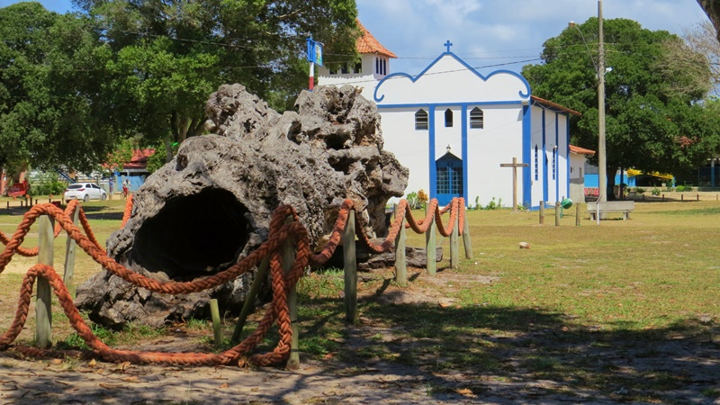
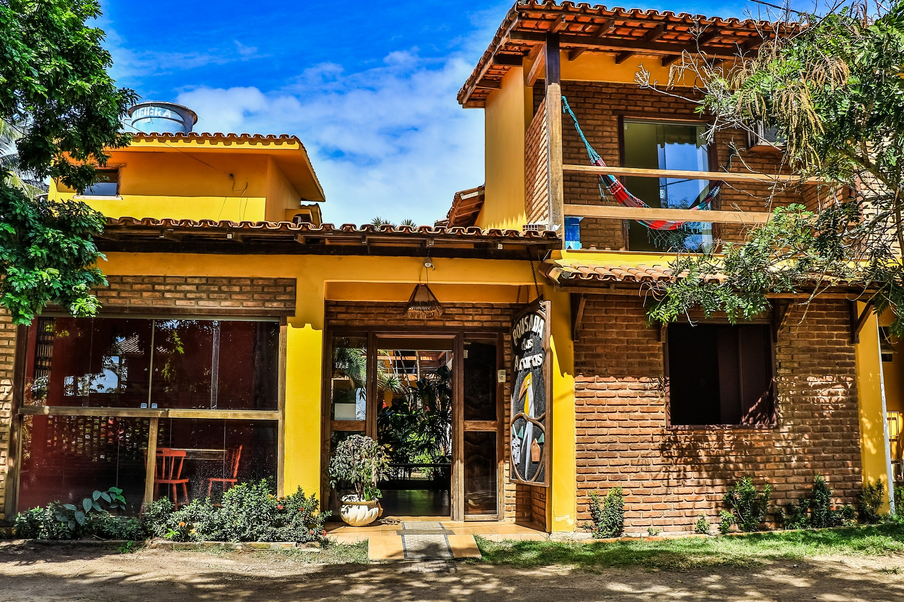

Itaúnas
É um distrito do município de Conceição da Barra, no Espírito Santo.
O nome Itaúnas é um topônimo de origem tupi que significa "pedra negra", através da junção dos termos itá = pedra e un = negro. O nome lhe foi atribuído em alusão às pedras negras do fundo do Rio Itaúnas, que margeavam a antiga vila.
Sua sede é uma pequena vila turística, muito famosa por suas praias, pela paisagem marcante das Dunas de Itaúnas e pela tradição do forró pé-de-serra.
